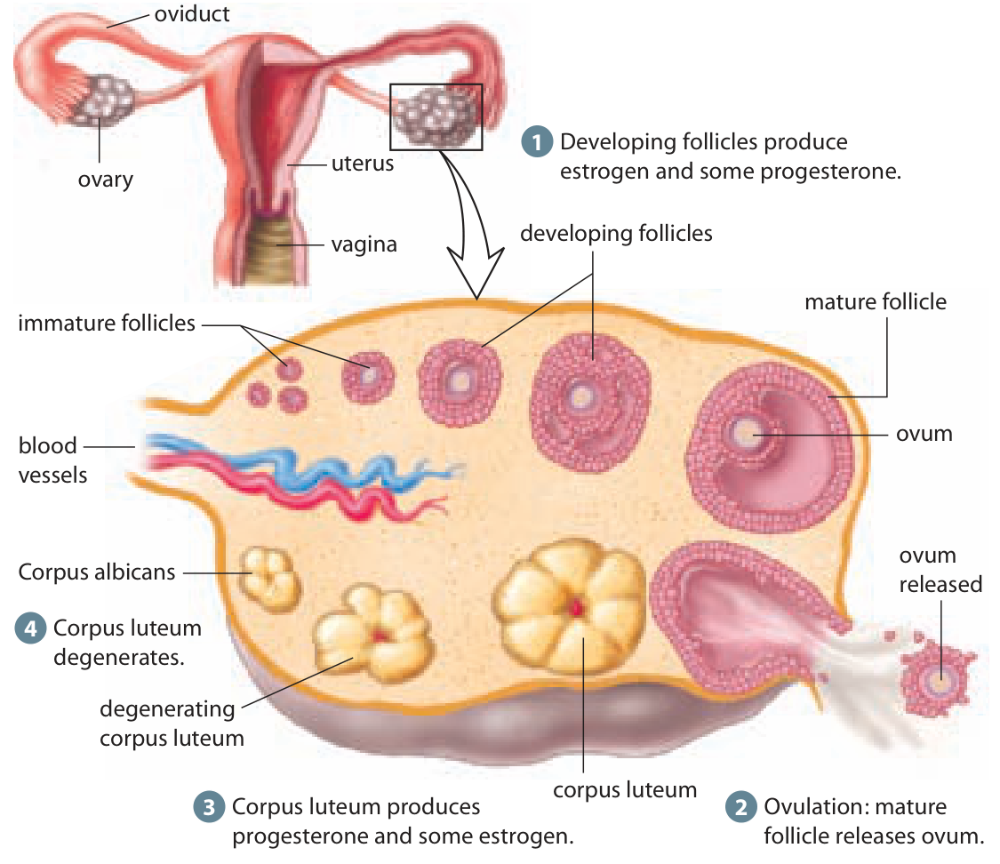

An oocyte develops inside a larger supporting structure
An ovary, an and a are related, but they are not three names for the same thing. The ovary is the organ. An oocyte is a developing female reproductive cell within it. A follicle includes that oocyte and the supporting cells around it. is the process that produces the female .
Many oocytes begin development before birth and enter meiosis, the chromosome-reduction process. They pause during meiosis I for an extended period. From onward, hormonal signals support the later development of groups of follicles. Usually one becomes the dominant follicle that proceeds toward in a cycle.
The begin life with a finite supply of oocytes rather than continually replenishing them as maintain the male starting-cell supply. Many follicles do not reach ovulation. A drawing with several stages is not a count of the eggs that will be released in one cycle.
The two ovaries do not have to take perfectly alternating turns. The textbook's simplified monthly description should not be used to infer which ovary must release the next oocyte. Nor does a usual one-oocyte example mean that every person's cycle follows the same timetable.
Chromosome reduction and cytoplasm division are different questions
Cytoplasm is the cell material outside the nucleus, including resources and organelles that support cell activity. Cytokinesis is the division of that cytoplasm when cells separate. In oogenesis, cytokinesis is unequal: most of the cytoplasm stays in one large reproductive cell, while small receive much less.
This unequal division concentrates resources in the large cell that can contribute to early development after fertilization. It does not give that cell an extra chromosome set. Haploid means one set of chromosomes, normally 23 in humans. Cell size, amount of cytoplasm and chromosome-set number describe different properties.
Before ovulation, a primary oocyte completes meiosis I, producing a large secondary oocyte and a small polar body. The secondary oocyte begins meiosis II and pauses again. It is the cell released at ovulation: it has one chromosome set, but has not yet finished separating the copied chromosome material in meiosis II. A sperm's entry can trigger completion of that division.
Compare the functional products. In , the process of sperm production in the , one can produce four haploid spermatids that differentiate into sperm. Oogenesis concentrates most cytoplasm in one large reproductive cell, with small polar bodies rather than four equal-sized functional eggs. Both processes reduce chromosome sets. Their distribution of cytoplasm and timing are different.
The familiar word egg and the figure label ovum are often used broadly. Use secondary oocyte when you need the precise stage released at ovulation. It is not necessary to memorise every meiotic phase here, but it is important not to say that meiosis II was already finished before release.
Read the follicle diagram as a sequence of changes
As a follicle develops, its supporting cells grow and its output increases. The tissue therefore supports a reproductive cell and also acts as an endocrine source, releasing hormones into the blood. Estrogen helps stimulate growth of the in the uterus. The ovarian source and uterine target are in different places.
Begin with the small overview at the top of the figure. The box and broad arrow enlarge an ovary; they do not show an ovary moving. In the large view, find the small immature follicles toward the upper left, larger developing follicles across the top and the mature follicle at the right. Locate the cell labelled ovum within the mature follicle rather than treating the whole fluid-filled structure as the egg.
At the lower right, the mature follicle ruptures and the oocyte is released. This is ovulation. Most follicular tissue remains within the ovary. The released cell and the remaining supporting tissue now have different destinations and functions.
The sequence is spread around the drawn ovary so the stages fit in one picture. A follicle does not physically travel clockwise around the organ to become a . The illustration combines stages through time, not necessarily all the structures visible together at one instant. Read the changes in the tissue, rather than treating its drawing position as a migration route.
A follicle before and after ovulation

An oocyte leaves the mature follicle; hormone-producing tissue remains in the ovary. Inquiry into Biology, p. 496.Hormone-producing tissue remains after the oocyte leaves
The follicular tissue left after ovulation develops into the corpus luteum, a temporary endocrine structure within the ovary. It releases mainly and some estrogen. Progesterone helps maintain the prepared endometrium after ovulation. The corpus luteum remains in the ovary; its hormones enter blood and reach target tissues, including the uterus.
Follow the figure from the released cell at the lower right to the yellow corpus luteum lower in the ovary. The cell outside the ovary is not the yellow hormone-producing structure. Next find the smaller degenerating corpus luteum at the lower left. The labelled corpus albicans is the scar-like remnant after regression, not an embryo.
If the corpus luteum does not receive a pregnancy-supporting signal, it regresses and its hormone output falls. The resulting loss of hormone support contributes to shedding of part of the endometrium during menstruation. This occurs later in the sequence; the death of an unfertilized oocyte does not instantly cause menstrual flow the next day. The timing and interacting feedback will be developed with the ovarian and uterine cycles.
Keep both paths in one explanation: the oocyte is released toward the , while remaining ovarian tissue changes its hormone output. A cell leaves, but the organ can continue sending a chemical signal. This makes it possible for events in the ovary to prepare and maintain tissue somewhere else.
Worked example
A released cell and an ovarian signal can exist at the same time
A model observation places a recently released oocyte in an oviduct and shows an active corpus luteum in the ovary. A student says the progesterone source must have travelled out with the oocyte. Does the observation support that claim?
- Identify the two structures in the observation. The oocyte is the released reproductive cell. The corpus luteum is tissue formed from the follicle remaining in the ovary.
- Identify the hormone source. The active corpus luteum releases progesterone and some estrogen while it is still in the ovary. The model therefore already provides an ovarian source; it does not require the released cell to carry that tissue with it.
- Follow the hormone route. Hormones enter the blood and can act on the endometrium in the uterus. The movement of a signal through blood is different from the cell's movement through an oviduct.
- Check the conclusion. Release of the oocyte is compatible with continuing ovarian hormone output. Neither the corpus luteum nor the whole ovary needs to travel to the uterus. The observation alone does not establish that fertilization or implantation has occurred.
Optional application
A drawing shows a small polar body beside a much larger secondary oocyte and labels each haploid. A student says the larger cell must be diploid because it contains more material. Explain the mistake and what the unequal size does help preserve.
Answer withheld for first attempt
Practise with support
Apply the explanation
Try both questions. Use the hint to revise your thinking after an incorrect answer.
Stop and think
Try this before opening the explanation
Does the corpus luteum travel to the uterus?
Answer withheld for first attempt
Open required check · Oogenesis and ovarian follicles
Explain what you have learned
This check counts toward chapter progress. Correct the 2 selections to unlock 2 written explanations. Saving writing records your response; it does not grade its accuracy.
Not started